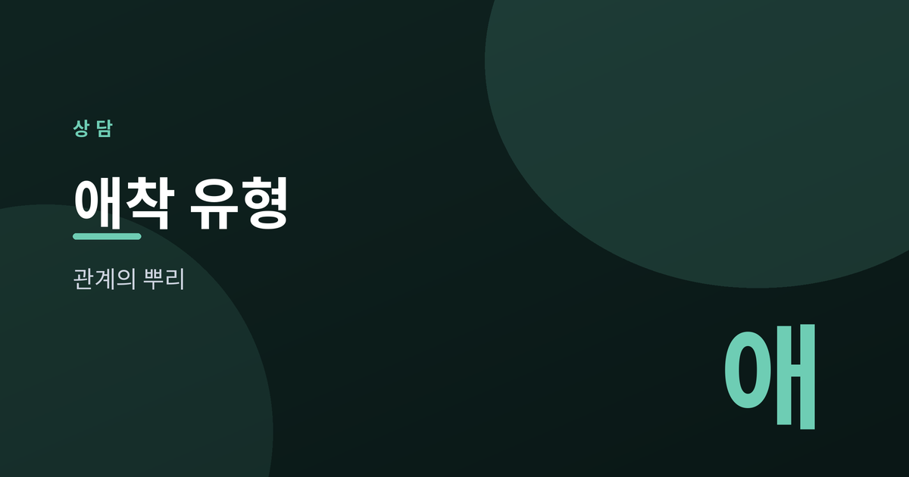
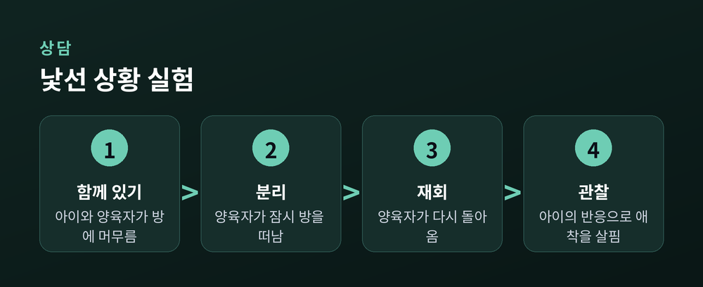
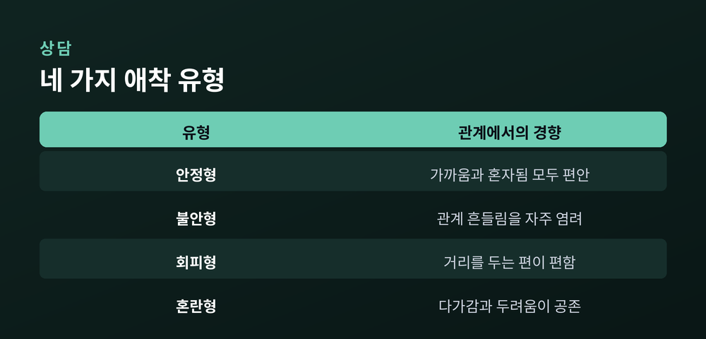
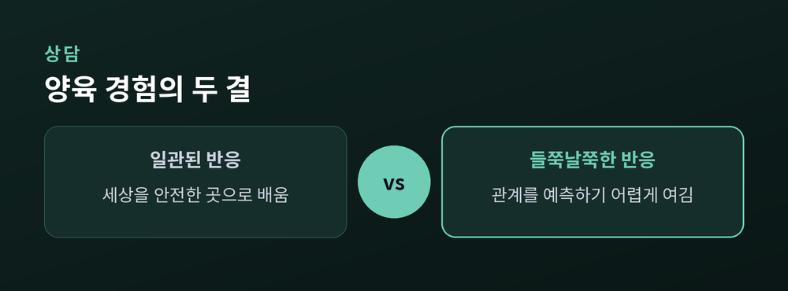
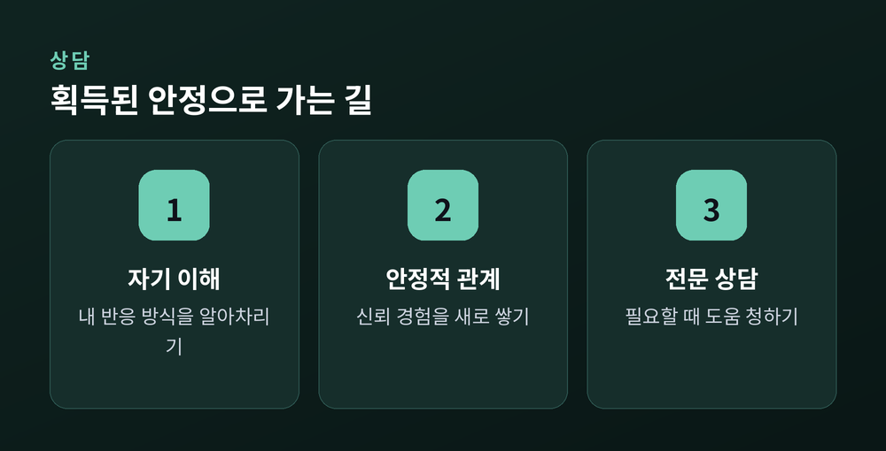

관계의 뿌리를 이해하는 법

오늘은 애착 유형에 대해 이야기해 보려 합니다.
누군가와 가까워질 때 우리는 저마다 다른 방식으로 반응합니다.
어떤 사람은 쉽게 마음을 열고, 어떤 사람은 자꾸 확인하려 하며, 또 어떤 사람은 거리를 둡니다.
그 차이가 어디서 비롯되는지, 애착이라는 개념을 통해 더듬어 보는 글입니다.
애착 이론은 영국의 정신과 의사 존 보울비에게서 출발했습니다.
그는 아이가 양육자와 맺는 정서적 유대가 생존을 위한 본능이라고 보았습니다.
아이는 위험을 느낄 때 양육자에게 다가가 안전을 확인합니다.
이 흐름을 실험으로 다듬은 사람이 메리 에인스워스입니다.
그는 '낯선 상황 실험'을 설계했습니다.
아이와 양육자를 낯선 방에 두고, 양육자가 잠시 떠났다 돌아오게 합니다.
그때 아이가 보이는 반응을 통해 애착의 결을 관찰한 것입니다.
양육자가 떠날 때 얼마나 불안해하는지, 돌아왔을 때 어떻게 위로받는지가 관찰의 핵심이었습니다.
어떤 아이는 금세 안정을 되찾고, 어떤 아이는 쉽게 진정하지 못했습니다.
이 작은 차이가 훗날 애착 이론의 큰 뼈대가 됩니다.

관찰과 후속 연구를 통해 애착은 대체로 네 갈래로 나뉩니다.
어디까지나 일반화된 경향이며, 사람을 가르는 낙인이 아닙니다.
안정형은 관계에서 비교적 편안함을 느낍니다.
가까워지는 것도, 혼자 있는 것도 크게 위협으로 여기지 않습니다.
불안형은 관계가 흔들릴까 자주 염려합니다.
상대의 반응에 민감하고, 확인받고 싶은 마음이 큽니다.
회피형은 거리를 두는 편이 편하다고 느낍니다.
깊이 기대는 상황을 부담스러워하기도 합니다.
혼란형은 가까워지고 싶은 마음과 물러서려는 마음이 함께 있습니다.
다가가면서도 동시에 두려움을 느끼는 셈입니다.
여기서 중요한 점이 있습니다.
사람은 하나의 유형에 딱 들어맞기보다, 여러 결을 조금씩 지니고 있습니다.
관계에 따라, 시기에 따라 다르게 나타나기도 합니다.
그러니 이 분류는 자신을 이해하는 실마리이지, 스스로를 규정하는 상자가 아닙니다.

애착의 결은 흔히 어린 시절 양육 경험과 연결됩니다.
양육자가 아이의 신호에 일관되게 반응해 주면, 아이는 세상을 안전한 곳으로 배웁니다.
반대로 반응이 들쭉날쭉하면, 아이는 관계를 예측하기 어려운 것으로 받아들입니다.
이렇게 몸에 밴 방식은 성인기의 관계에도 영향을 줍니다.
예전에 익힌 대응이, 지금의 연인이나 친구 관계에서 다시 나타나는 것입니다.
많은 사람이 "왜 나는 늘 같은 지점에서 힘들까" 하고 느끼는 이유이기도 합니다.
가령 사소한 연락 지연에도 크게 흔들리는 사람이 있습니다.
반대로 상대가 가까이 다가오면 이유 없이 답답해지는 사람도 있습니다.
그 반응은 지금 이 관계만의 문제가 아니라, 오래전에 배운 습관이 되살아난 것일 수 있습니다.
이 점을 알아차리는 것만으로도 자신을 조금 덜 탓하게 됩니다.

여기서 한 가지를 분명히 하고 싶습니다.
애착 유형은 평생 고정된 낙인이 아닙니다.
새로운 관계에서 안정적인 경험을 쌓으면, 애착의 결도 서서히 달라집니다.
이렇게 후천적으로 얻는 안정을 '획득된 안정 애착'이라 부릅니다.
안정적인 파트너, 신뢰할 수 있는 친구, 그리고 상담이 그 계기가 되기도 합니다.
예전에는 불안이 관계의 기본값이던 사람이, 지금은 조금 더 편안해지는 일도 있습니다.
변화는 대개 극적이지 않고, 작은 경험이 쌓이며 천천히 찾아옵니다.
그 과정이 더디게 느껴질 수는 있습니다만, 방향이 바뀌었다는 것 자체가 의미 있는 진전입니다.
먼저 필요한 것은 자기 이해입니다.
자신의 반응 방식을 알아차리면, 관계에서 조금 더 여유를 가질 수 있습니다.
다만 혼자 감당하기 어려운 어려움이 크다면, 전문 상담의 도움을 받아 보시길 권합니다.

정리하면 이렇습니다.
애착은 우리가 관계를 맺는 오래된 습관이지만, 다시 배울 수 있는 것이기도 합니다.
"뿌리를 이해하는 일은, 나무를 다시 심는 일과 다르지 않습니다."
당신의 관계가 어디서 비롯되었는지 묻는다면, 그 답을 찾는 여정은 이미 시작된 셈입니다.